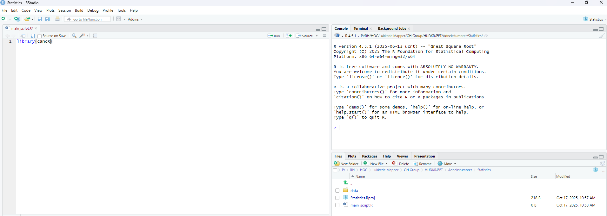

Basic R
basic.RmdOverview
The main panel in R consists of four quadrants:
- Script
- Console
- Environment
- Files/plots

Script
The script is the main working tool. Code in a script is saved and can be reloaded at a later time point. Think of it as a word document or excel sheet in which you work. Ctrl + enter runs a command in the script.
Console
The console has two functions. The first function is that the console prints results from the script and the second is that we can enter commands into the console. An example (press enter to run the command):
2+2
#> [1] 4We can however browse through previously submitted commands in the console with the arrow up on the keyboard.
The commands entered in the console are temporary and will not be saved for the next R session. Therefore we use the console for commands that we only enter once (e.g. installing packages), quick calculations, minor debugging of code etc.
Environment
The environment is an overview of all loaded data (objects) in R. Currently, nothing is loaded. We can assign a value to an object named x which will now show in the environment.
x <- 1The arrow indicates that we are assigning something to the environment. We can call this object again, which prints it in the console
x
#> [1] 1We can also save a data frame
data <- data.frame(x=1, y=2, z=3)We can view the dataset by clicking on it in the environment. We can also just enter View(data) in the console.
We can also view the data by typing
data
#> x y z
#> 1 1 2 3This will print it to the consol. We can also both assign the value and print it simultaneously by adding parentheses around the whole expression
(data <- data.frame(x=1, y=2, z=3))
#> x y z
#> 1 1 2 3Formats
All values in R have a format for R to process it correctly. The main
formats in R are:
- Numerical (numbers)
- Integers (whole numbers)
- Characters (letters/words/text strings)
- Factors (categorical values with specified levels and ordering)
- Dates
- Logicals (True or False)
A common problem is that R functions need specific formats, which
entails reformatting to make functions work. Here we define
value as the number 1 which is a numeric
value. This can be reformatted to the other formats
value <- 1
as.logical(value)
#> [1] TRUE
as.character(value)
#> [1] "1"
as.integer(value)
#> [1] 1
as.Date(value)
#> [1] "1970-01-02"Logical: Converts 0 to false and everything else to true
Character: Adds " around the value
Integer: Does nothing in this case as the value is already a whole
number, but would if the value was 1.5
Date: Converts to 1970-01-02. The time origin in R is 1970-01-01, so the
value 1 corresponds to 1970-01-01 + 1 day.
Types of objects
The main types of objects are
- Values
- Vectors
- Dataframes
- Lists
- Functions
- Special objects such as plots, statistical models or other complex
objects
Vector
A vector is a string of values. These are collected using a
c()
vector <- c(1,2,3,4)
vector
#> [1] 1 2 3 4Dataframe
A dataframe is a collection of vectors of same lentgh constituting the columns of a dataframe.
These three vectors can be combined into one single data frame
df <- data.frame(v1, v2, v3)
df
#> v1 v2 v3
#> 1 1 a 1.1
#> 2 2 b 2.2
#> 3 3 c 3.3
#> 4 4 d 4.4Dimensions of a dataframe
We can print the number of rows of a dataframe
nrow(df)
#> [1] 4And the number of columns
ncol(df)
#> [1] 3Or together
dim(df)
#> [1] 4 3Printing values from a dataframe
The names of the dataframe can be extracted with
names()
names(df)
#> [1] "v1" "v2" "v3"An entire column can be extracted with the $ sign
df$v2
#> [1] "a" "b" "c" "d"Values of the dataframe can also be extracted using square brackets
([]). The syntax here is [rows,columns]. The
first row in the third column:
df[1,3]
#> [1] 1.1Multiple values are collected with c()
df[c(1,2,3), 3]
#> [1] 1.1 2.2 3.3All rows or columns are selected by leaving the place blank. This prints the entire second column
df[, 2]
#> [1] "a" "b" "c" "d"Or the entire third row
df[3, ]
#> v1 v2 v3
#> 3 3 c 3.3We can also name the columns with a text string
df[, c("v2", "v3")]
#> v2 v3
#> 1 a 1.1
#> 2 b 2.2
#> 3 c 3.3
#> 4 d 4.4Creating/modifying values of a dataframe
If we want to create a new variable we assign this to the dataframe
using the $
df$new <- "new"
df
#> v1 v2 v3 new
#> 1 1 a 1.1 new
#> 2 2 b 2.2 new
#> 3 3 c 3.3 new
#> 4 4 d 4.4 newIf we wish to modify an existing variable we use the same procedure
df$v1 <- df$v1 + 5
df
#> v1 v2 v3 new
#> 1 6 a 1.1 new
#> 2 7 b 2.2 new
#> 3 8 c 3.3 new
#> 4 9 d 4.4 newOverview of a dataframe
A quick overview (structure) of the content of a dataframe is with
str()
str(df)
#> 'data.frame': 4 obs. of 4 variables:
#> $ v1 : num 6 7 8 9
#> $ v2 : chr "a" "b" "c" "d"
#> $ v3 : num 1.1 2.2 3.3 4.4
#> $ new: chr "new" "new" "new" "new"Here we see the same as above, namely that we have 4 rows (observations) and 4 variables. We also see the names of the variables, the values and the formats (numeric and character).
Lists
Lists are very flexibe objects as we can store different formats in a
list as separate elements. Here we make a list containing our dataframe
df, our single value valueand our vector
vector
list(df, value, vector)
#> [[1]]
#> v1 v2 v3 new
#> 1 6 a 1.1 new
#> 2 7 b 2.2 new
#> 3 8 c 3.3 new
#> 4 9 d 4.4 new
#>
#> [[2]]
#> [1] 1
#>
#> [[3]]
#> [1] 1 2 3 4The elements are indicating by the [[1]] corresponding
to the “first” element etc.
The elements can also be named (for layout we press shift + enter to enter a new line)
(mylist <- list(dataframe = df,
single_digit = value,
numbers = vector))
#> $dataframe
#> v1 v2 v3 new
#> 1 6 a 1.1 new
#> 2 7 b 2.2 new
#> 3 8 c 3.3 new
#> 4 9 d 4.4 new
#>
#> $single_digit
#> [1] 1
#>
#> $numbers
#> [1] 1 2 3 4The elements of a list can be called
mylist["numbers"]
#> $numbers
#> [1] 1 2 3 4Functions
Functions perform specified commands on a series of arguments.
Functions have the syntax:
name(argument 1, argument 2, etc.)
For instance, if we want to take the mean of a vector where we have
two arguments:
mean(x, na.rm)
Here x is a vector of values and na.rm indicates whether missing values
should be removed in the mean
mean(x=vector,
na.rm=T)
#> [1] 2.5Another example is the plot function from before.
plot(x,y) where x and y are vectors. We could use the vectors from the
dataframe df by calling them with $
plot(df$v1, df$v3)